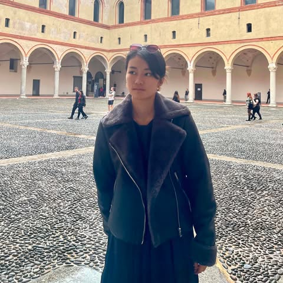
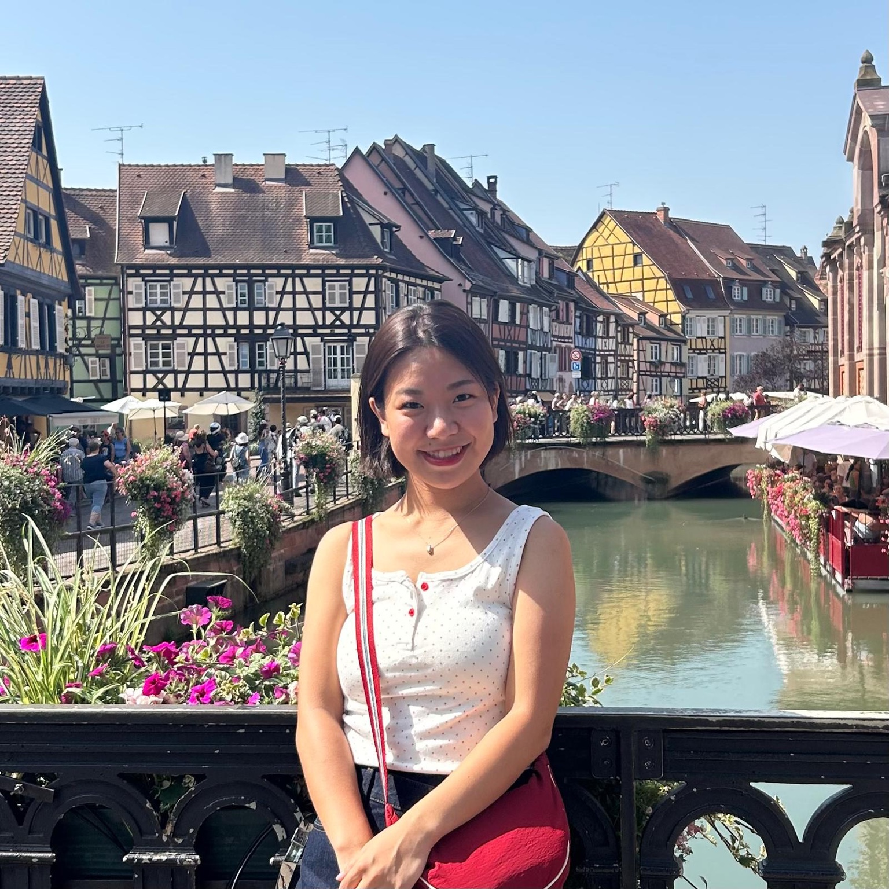
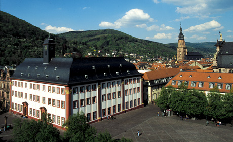
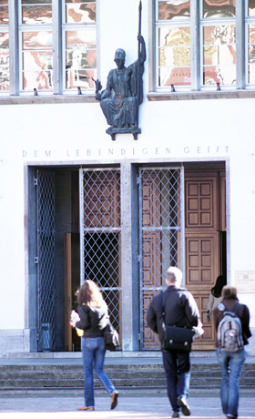

朝日理子
IU | University of Applied Sciences for International Students
Soziale Arbeit (B.A.)／社会福祉・社会教育 デュアル学士
プロフィールを見るGERMANY STUDY LAB
現役生だから話せる、留学のリアル。
ドイツの大学で学ぶ学生と、これから留学を目指すあなたをつなぐ。
出願から現地での暮らしまで、実体験を次の一歩へ。
留学を、一部の人の特別なものにしない。
公式ニュースはDAAD日本の発表へのリンクです。募集条件は各発表元でご確認ください。
ドイツの大学で学ぶ現役生に、出願・語学・授業・現地生活の経験を聞けます。
IU | University of Applied Sciences for International Students
Soziale Arbeit (B.A.)／社会福祉・社会教育 デュアル学士
プロフィールを見る

出願準備・語学学習・大学生活・住居探し。
それぞれの現役学生が経験したドイツ留学のリアルを、ZoomやLINEで相談できます。
25 USD
約3,800円
1回40分
出願や現地生活の疑問を、現役学生と直接話して整理できます。
お試し10日間
5,000円
通常30日間
15,000円
現役学生1名と、期間中LINEでじっくり相談できます。
Zoom面談の円換算額は、為替レートやカード会社によって変わります。
予約受付は準備中です。現役学生のプロフィールから、Zoom・LINEそれぞれの相談内容をご確認いただけます。
同じ「留学相談」でも、得意なことや支援の範囲は違います。
公式情報・専門的な手続き支援・現役生の経験を、目的に合わせて使い分けましょう。
支援内容・料金・対応する大学は、事業者ごとに確認してください。
例：JASSO・DAAD・大学の公式窓口
私たちは「現役生の一次情報」に集中し、責任の重い手続きは専門サービスと役割分担します。
国・お金・進学の3つの入口から、必要な情報へ。

01 / ドイツ留学の基本
暮らし・物価・賃金・住居・保険。留学生活を具体的に考える。
写真：ハイデルベルク大学・旧大学校舎 / Universität Heidelberg02 / ドイツ留学の基本
DAAD・大学・財団の支援。対象者と申請時期から探す。
写真：ハイデルベルク大学図書館 / Universität Heidelberg
03 / ドイツ留学の基本
学士・修士・デュアル課程、入学資格、学費、大学検索とランキング。
写真：ハイデルベルク大学・新大学校舎 / Universität Heidelberg写真提供・再配布条件：ハイデルベルク大学 ↗。図書館の写真は学習環境のイメージです。
大学や進学制度のガイドから、毎日3件を紹介します。
都市を選び、大学を見つける。
大学を押すと、その大学の登録学生を表示します。
収録都市 登録学生の大学がある都市（数字は人数）
州政府・大学公式サイトで確認した大学を収録しています。
点は都市中心の目安で、キャンパスの位置ではありません。
地図：© OpenStreetMap contributors · 都市座標：© BKG 2026 · dl-de/by-2-0（VG250・GN250を選択・座標変換） · データ出典
学士・修士、英語・ドイツ語での進学、社会人からの挑戦。
共同運営者3名とAinaさんが、それぞれの経験をお伝えします。
現役学生4名を表示しています。
IU | University of Applied Sciences for International Students
Soziale Arbeit (B.A.)／社会福祉・社会教育 デュアル学士
日本の大学卒業後、IT系企業に約3年半勤務して渡独。ドイツ語をゼロから学び、現在はミュンヘンで大学に通いながら働き、児童養護施設でインターンシップをしています。
東京で、支援を必要とする子どもたちの学習支援にボランティアとして関わったことから、社会問題や若者の教育への関心が深まりました。ドイツで語学を学びながら進学という選択肢を見つけ、社会福祉・社会教育の分野に進みました。
前職や年齢に関係なく、新しい場所で新しい道を選ぶことはできます。「道は歩いたあとにできる」。大学進学に限らず、ワーキングホリデー、現地の語学学校、生活費や学費など、私自身が実際に経験したことをお伝えします。
Zoom予約受付は準備中です。
オスナブリュック大学
Conflict Studies and Peacebuilding 修士課程
平和学を学ぶ修士課程の学生。ベルリンの難民・移民支援団体と、ボンの国連事務局でインターンシップを経験。note「留学するならドイツ」を執筆しています。
学部時代から戦争と平和を進路のテーマにしていました。英国での短期留学で出会う人々の背景について考え、経済的ゆとりや国籍に関わらず学問と留学が開かれていること、グローバルサウスを含むさまざまな国の人と学ぶことを大切にして、ドイツ留学を決めました。
書類出願や住居関係、ビザ申請・延長で困難が生じた経験を、少しでも共有できれば幸いです。大学生活やインターンシップについても、私自身の経験をお伝えします。
Zoom予約受付は準備中です。
Technical University of Hamburg
B.Sc. Engineering Science
日本の高校でIBを取得し、卒業後にドイツの工科大学へ進学。大学生活・生活費・住居探し・一部の出願について、自身の経験をお伝えします。
小学5年生の時に父の仕事の関係でドイツに暮らし、帰国後もドイツに戻りたいと思っていました。高校生の時に、エンジニアリングを英語で学ぶことを決めました。
日本の高校を卒業してからの出願や住居探しには苦戦しましたが、現在はドイツの工科大学で学んでいます。留学を迷っている、興味のある方の一歩を後押しできれば幸いです。
Zoom予約受付は準備中です。
University of Bayreuth（バイロイト大学）
M.Sc. Global Food, Nutrition and Health
日本の大阪大学で看護学や公衆衛生を学び、現在はドイツのUniversity of BayreuthでGlobal Food, Nutrition and Healthの修士課程に在籍しています。大学探し、必要書類の準備、TOEFL対策など、約半年かけて出願準備を進めました。渡独後はドイツ語の学習を続け、telc Deutsch B1を取得。住居探し、Anmeldung、ビザ・滞在許可、銀行口座、保険などの手続きも経験しています。
以前から海外で学んでみたいという気持ちがあり、日本の大学院への進学後、ドイツの英語修士課程への進学に挑戦しました。
留学前は私自身も、大学選びや出願、英語力、現地での生活など分からないことがたくさんありました。そのため、これから留学を考えている方が気軽に相談できるような存在になれればと思っています。
Zoom予約受付は準備中です。
はい。大学や専攻を比較している段階でも、現役生の経験を聞いて検討できます。
いいえ。現役生との経験共有を目的とした相談で、出願代行や合格保証は行いません。個別の入学資格や最新の募集条件は大学に確認してください。
プロフィールと大学検索を参考に、相談したい現役生を選んでください。予約受付が準備中の場合は、各プロフィールの表示をご確認ください。
LINE相談の内容と申込方法は、案内ページで確認できます。
留学を、一部の人の特別なものにしない。
お金や環境が理由で、
「判断する前に諦める」学生を減らしたい。
経験した人の一次情報を、これから挑戦する人へ。
自分に合う道を考えるきっかけを、ドイツ留学ラボから。
 写真：Christian Wißler, Hochschulmarketing / Public domainバイロイト大学
写真：Christian Wißler, Hochschulmarketing / Public domainバイロイト大学 写真：MaxEmanuel / CC0ミュンヘン工科大学（TUM）
写真：MaxEmanuel / CC0ミュンヘン工科大学（TUM）